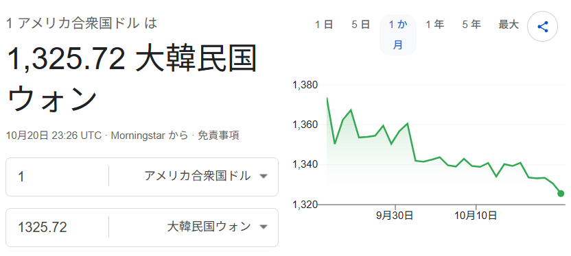
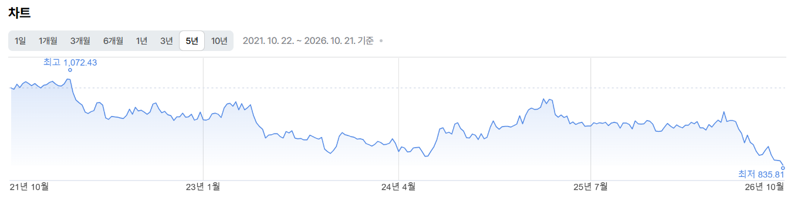

한국국격은 계속 올라가는데
내 미장, 국장 둘다 재산은 사라지네? ㅋㅋㅋㅋㅋㅋㅋㅋㅋㅋㅋ
일본어로 뜬건 일본에서 일하고 있다는 의미입니다.
매국노 아니다 나 엔화 벌어서 한국 보낸다

나는...엔화를 벌어서....고국에....송금...한다.....

한국국격은 계속 올라가는데
내 미장, 국장 둘다 재산은 사라지네? ㅋㅋㅋㅋㅋㅋㅋㅋㅋㅋㅋ
일본어로 뜬건 일본에서 일하고 있다는 의미입니다.
매국노 아니다 나 엔화 벌어서 한국 보낸다

나는...엔화를 벌어서....고국에....송금...한다.....
와 진성 애국노네 .. ㄷㄷ
ㅠㅠ
엔화 떨어질때마다 사서 평단 860에 1.1억 들어가 있는데 우야노 ㅠㅠ
100엔에ㅋㅋㅋ839원ㅋㅋ
애국노야 ㅜㅜ
난 한국 지사라서 원화로 받는 매국노인데 ㅠㅠ
엔화 관리 똑바로 안 하냐? 880에 싸다고 잔뜩 들어갔는데 왜 계속 떨어져? 국격 관리 좀 해라
환율오르는게 국격이라고 주장했던 애들이 있는데? ㅋㅋㅋ
950에 일본갔다왔는데 쉬발...
애국노
830원 깨졌네... 진짜 존나게 떨어지는구나.
계속 소량 매수 해야지. 840에 10만원 샀는데 조만간 또 사놔야겠구나
떨어질때마다 20만원씩 구매중..
엔화 700엔대 내년초에 볼거같다. 20년간 엔화 관심두고있었는데 지금이 역대 최약 일본임.
야 엔화 왜자꾸떨어져!
환율이 국격이라고 한 뭔붕이는 지금 쪽팔리지 않을까? 그 정도는 신경 안 쓰려나?
개붕이 아닐걸? 클리앙에서 짤 퍼온걸로 기억하는데 그거 템플릿으로 한거겠지
ㅇㅇ 어딘지 몰라서 뭔붕이라고 함
실시간 월급 하락중인 개붕이
엔 달러, 원 달러, 엔 원까지 이거 시발 어케하노
엔화 필요 없다 개붕아. 농담이고 힘내라 ㅜ 나도 금이고 뭐고 자산 투자해놓은거 싹다 푸르러졌다 개망....
나도 금 조금 사놨는데 -20%.....
나도 왜국노라 가만히 있는데 자산 가치가 하락중ㅠㅠ